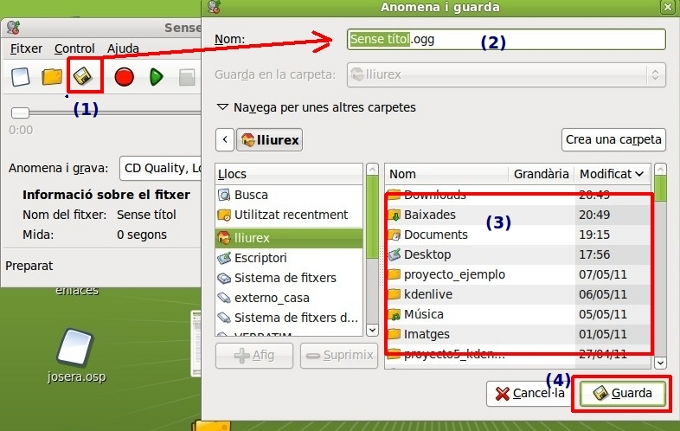

3. Grabando en el Sistema
La finalidad de este apartado es utilizar los dispositivos de entrada de nuestro ordenador para capturar (grabar) sonidos. En este caso trataremos, utilizando el micrófono, de grabar sonidos y guardarlos en diversos formatos.
Previamente, debemos disponer de nuestro sistema de entrada/salida de audio configurado. En caso de dudas o mal funcionamiento de los mismos consulta el Anexo de Configurar Dispositivos y Software.
1- Entramos en Aplicaciones / Sonido y Video / Grabador de Sonidos.

2 - Una vez iniciado el programa nos muestra una pantalla con dos partes bien diferenciadas:
- En (a) la barra de herramientas (nuevo fichero, abrir uno ya existente, guardar el fichero actual, grabar la entrada del dispositivo seleccionado, reproducir el sonido del fichero activo y detener).

- En esta barra de herramientas se encuentra un botón rojo de grabar. Utilizando dicho botón se procede a generar unos ficheros para descubrir las características de los diferentes tipos de grabaciones.
- El resto de los iconos de esta barra de herramientas es similar al resto de aplicaciones conocidas. Ejemplo: guardar(1), le idenficamos el nombre de nuestro fichero (2) y su extensión. Seleccionamos la carpeta en el que lo deseamos guardar (3) y guardamos (4).
El proceso es similar para Abrir.
- En
(b) podemos definir en que formato queremos grabar nuestra
captura de audio actual. Los principales tipos de los que disponen
son:
- Calidad de CD, con pérdida (ogg)
- Calidad de CD, MP2
- Calidad de CD, sin pérdida (flac)
- Voz, con pérdida (spx)
- Voz, sin pérdida (wav)
Jo.R.C.A. 2004 - 2011

Edición de Audio y Video con Software Libre by José Ramón Cerdeira Alonso is licensed under a Creative Commons Reconocimiento-No comercial-Compartir bajo la misma licencia 3.0 España License